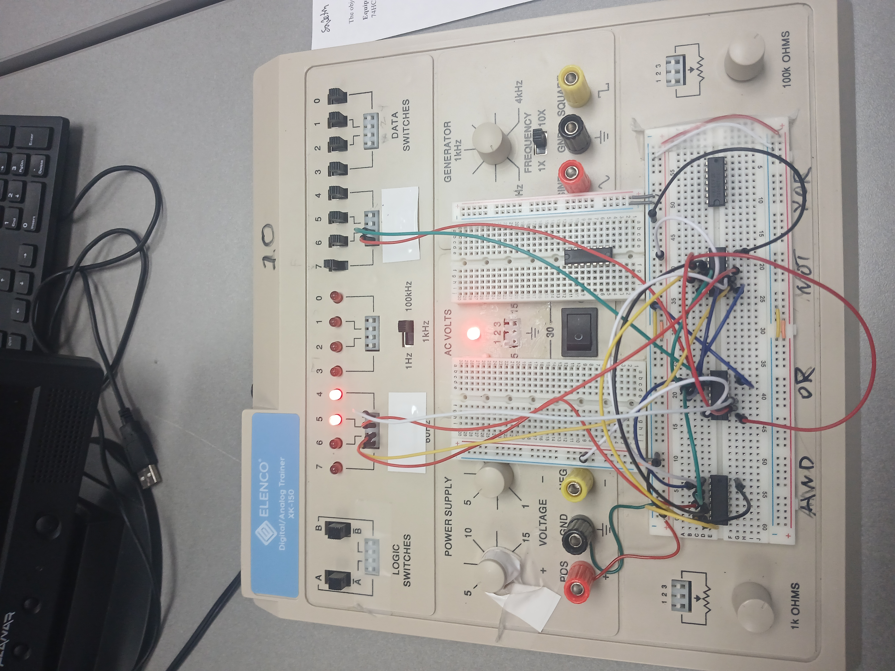

Has started their college career in 2019 at NYCCT. Due to various reasons has posponed their degree until 2024 choosing to finish their degree at The College of Staten Island.
Currently I am in CSC 347 working with breadboards:

I also use tinkercad to simulate for labs.
9/16/2025 Sadetin